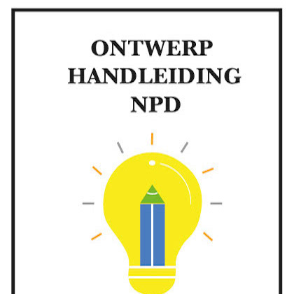
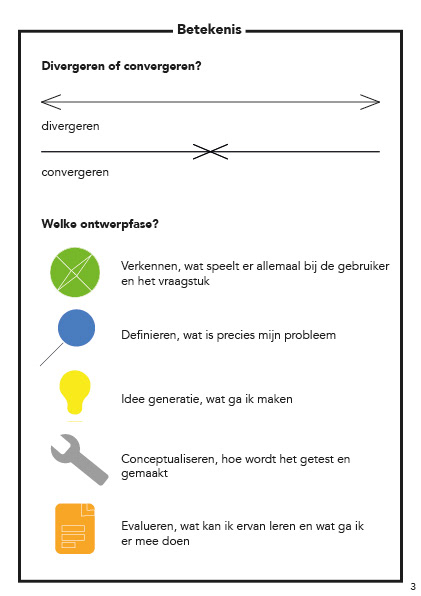
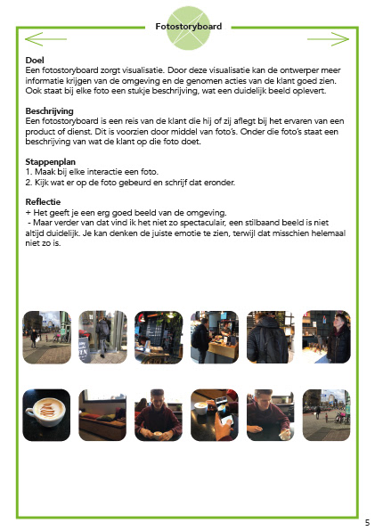
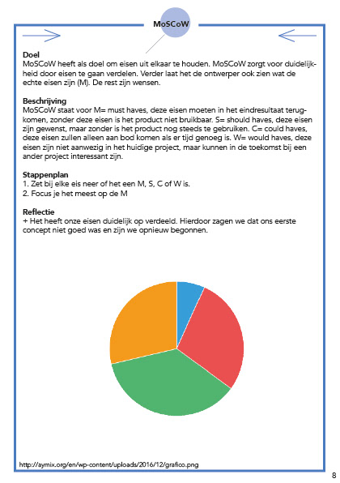
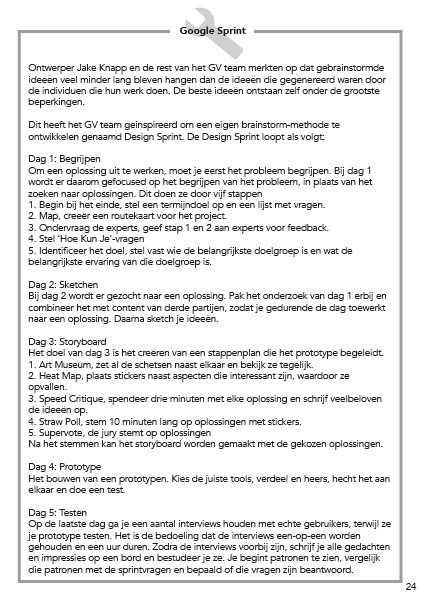
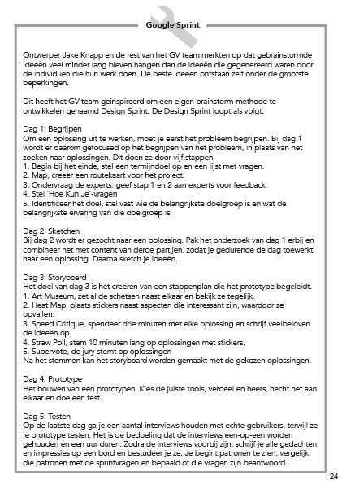

Assignment year 1: For the subject New Product Development I had to make a tiny book that tells all about different ways how you can start research on the beginning of a project. This assignment helped me learn about a lot of research methodes that will always come with a good result. It is very handy to have at home.
   
 
